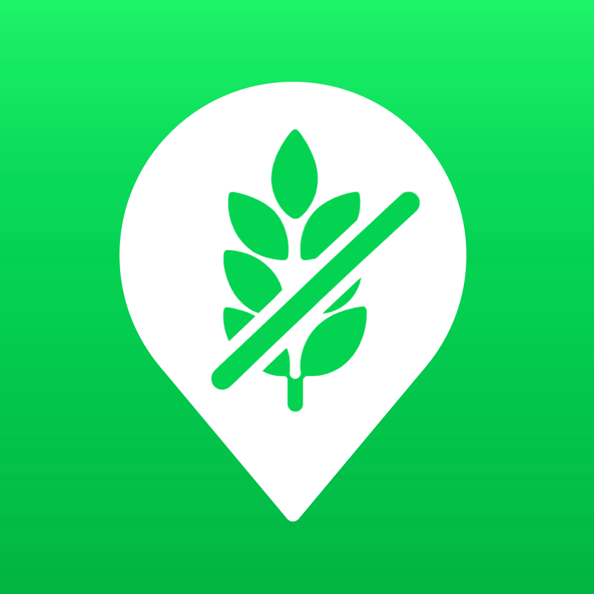

Glutenmaps
Find gluten-free restaurants, cafés and other places nearby, on a map and in a list.
Everything nearby
The map shows gluten-free places around your location, or around any place you search for. With address, phone number and website when known.
See what it's based on
For every place you can see where the gluten-free information comes from, so you can judge for yourself how reliable it is.
Nothing to hide
No account, no ads, no tracking. Your saved places and history stay on your own iPhone. The place data comes from OpenStreetMap.
Why reviews matter
Nobody will ever build a complete, worldwide list of gluten-free places. Venues change their menus, open and close, and no database keeps up.
What will always exist are people sharing their experiences: in reviews they write where they could eat safely and where they couldn't. That is the direction Glutenmaps is heading: letting those experiences count alongside database information, and always showing where information comes from.